Facebook快捷登录申请及配置教程：
- 首先需要创建个facebook账号，此处略过
- 进入facebook开发者后台 https://developers.facebook.com/apps/登入开发者账号
- 创建一个应用，选择如图所示的游戏。绿色区域填写只要合法不报错就行，黄色区域就填写开发者账号的游戏即可
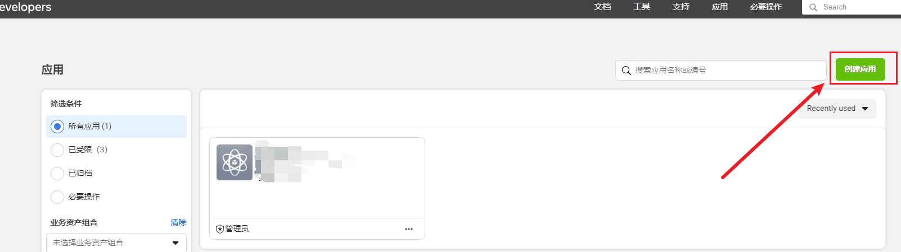
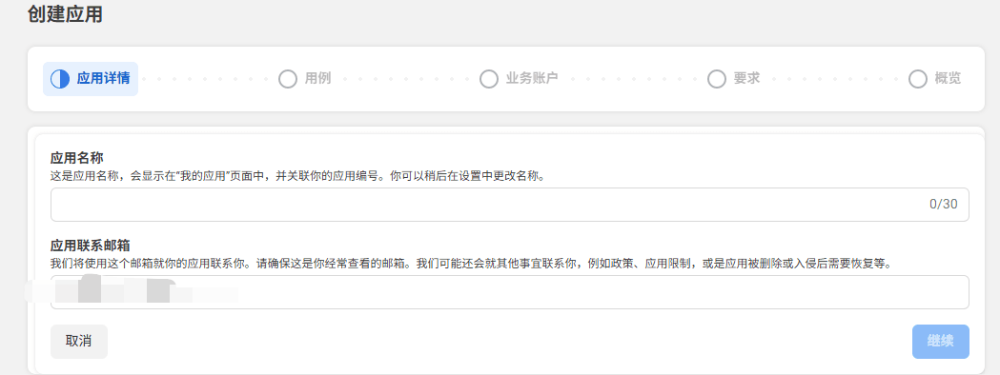
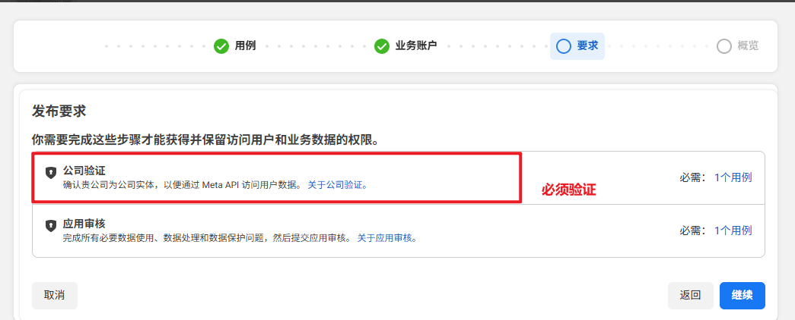
- 开始设置facebook登录的各种信息
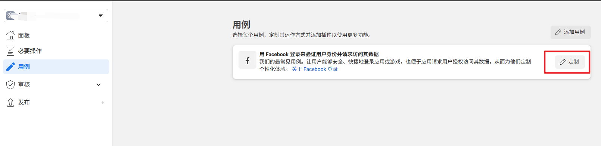
- 按照如图标注的区域所示，打开相关开关，另外填写实际使用的h5的地址。
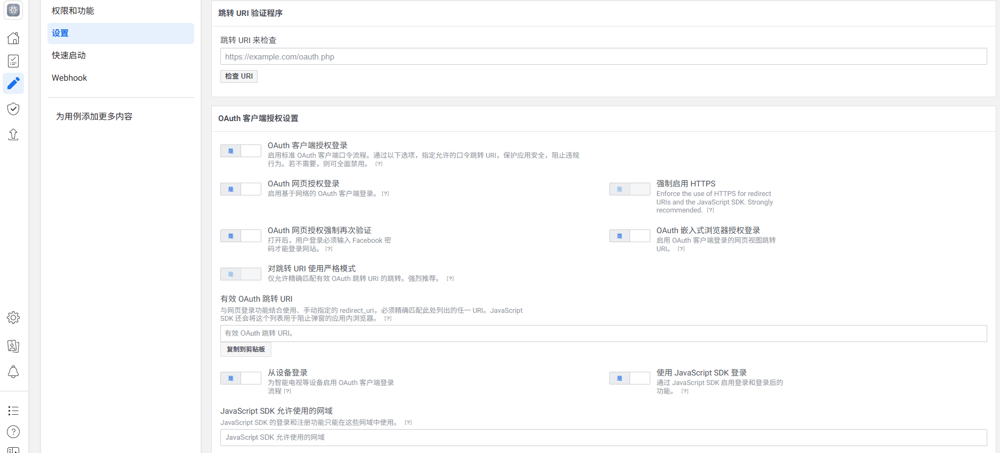
- 点击快速启动设置ios相关参数
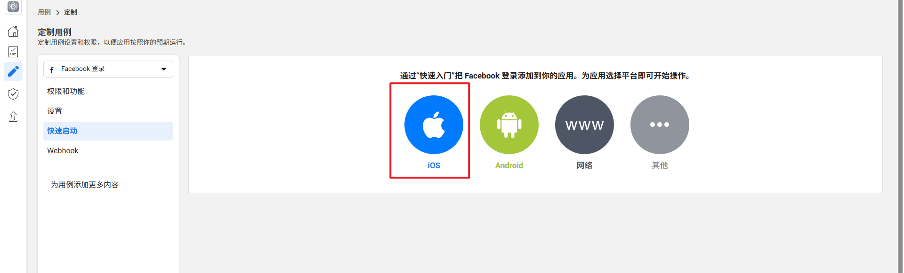
- 点“继续”到第二步的时候填写包名，填写如图所示。保存后并继续。
- 到第三步骤的时候打开单点登录开关，保存并继续。
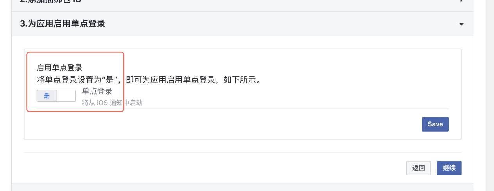
- 然后一路继续到最下面。
- 点击快速启动设置android相关参数
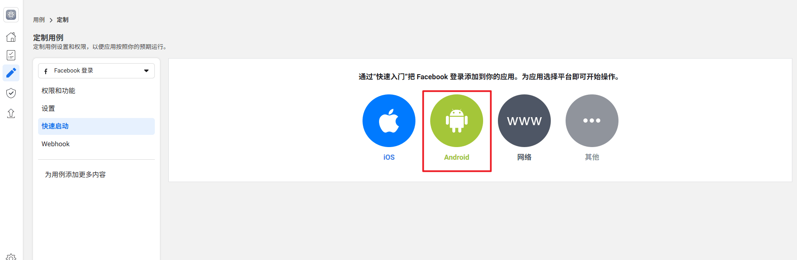
- 点“继续”到第三步时填写Android包名（下图填写：com.google.android.apps.maps）和启动Activity（下图填写：org.cocos2dx.javascript.AppActivity），点击保存并继续。
- 填写密钥散列，目前所有的包都用的一个签名，所以签名的密钥散列也是一样的（QtkxSAk0Lm0kDTm22VnB2mUUM1s=）,保存并继续。
- 下一步开启单点登录，如下图，保存并继续
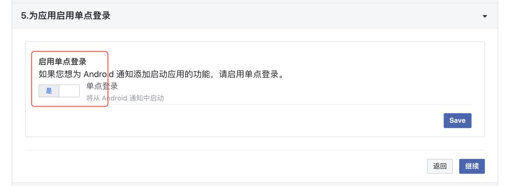
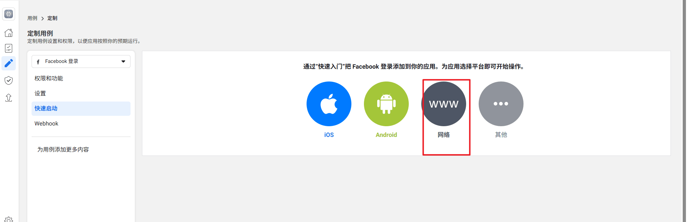
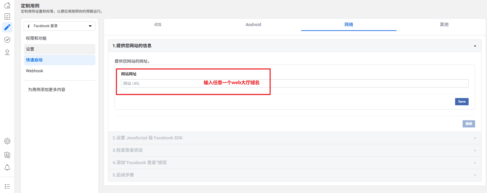
- 完善应用的相关信息用于审核,，如下图所示，应用域名填写：真实的大厅域名（全部大厅域名都要填写）；空间名称随意填写不报错就行；隐私、条款、数据删除请填写大厅域名（一个就可以）：
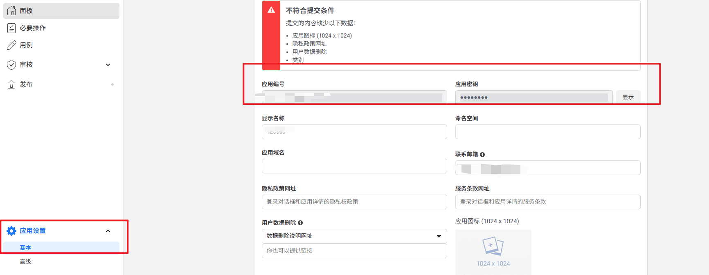
邮箱填写真实邮箱，其他信息随意不报错就行
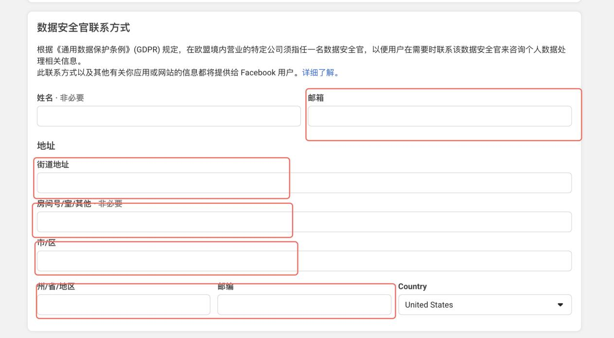
- 填写facebook信息到后台，应用编号就是appid，应用密钥就是secret，android,ios和h5都是一样的，全部复制进去就OK了
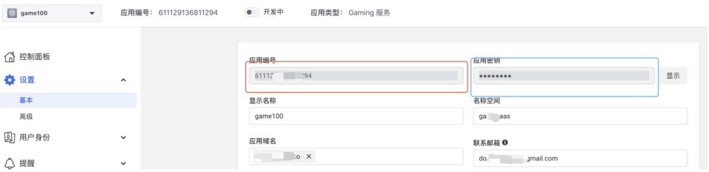
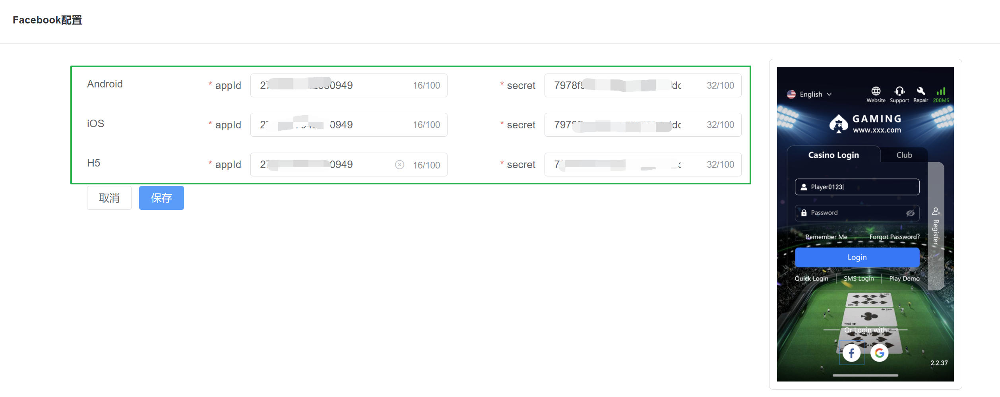
- 最后保存后留意更新iOS和Android包就OK了，h5不用更新。